Window
What is a Window?
In InvUI, windows represent the actual Minecraft inventories that are displayed to the player. Windows are made up of guis, whose number varies based on the window type. For example, a normal chest window has two guis: one for the upper and one for the lower inventory. Some window types also have special functionality, like the rename bar in anvil windows or the trade buttons in merchant windows.
A window can only have one viewer. This makes localization easy, as up until this point we have dealt with ItemProviders, which can return an ItemStack based on a locale. Now, the window is the first part in the chain that actually resolves the ItemStacks - and as these are translated into a specific language, allowing multiple people to view the same window might cause one of them to see the wrong language.
Every window encompasses both the upper- and the lower inventory (i.e. the player's inventory), even if you don't set a lower gui. However, by default, the lower gui is just a referencing inventory to the player's actual inventory. This allows the player to still interact with their inventory contents. When a window is open, InvUI controls the entire view at all times and no interactions are handled by Bukkit.
Window Types
Normal Window
The normal window, which can be built using Window.builder(), is very flexible in the dimensions of the upper gui. Possible dimensions are: 9x6, 9x5, 9x4, 9x3, 9x2, 9x1, 5x1 and 3x3. The lower gui is always 9x4. For upper guis of width 9, the generic chest inventory is used. 5x1 is a hopper inventory and 3x3 is a dropper inventory.
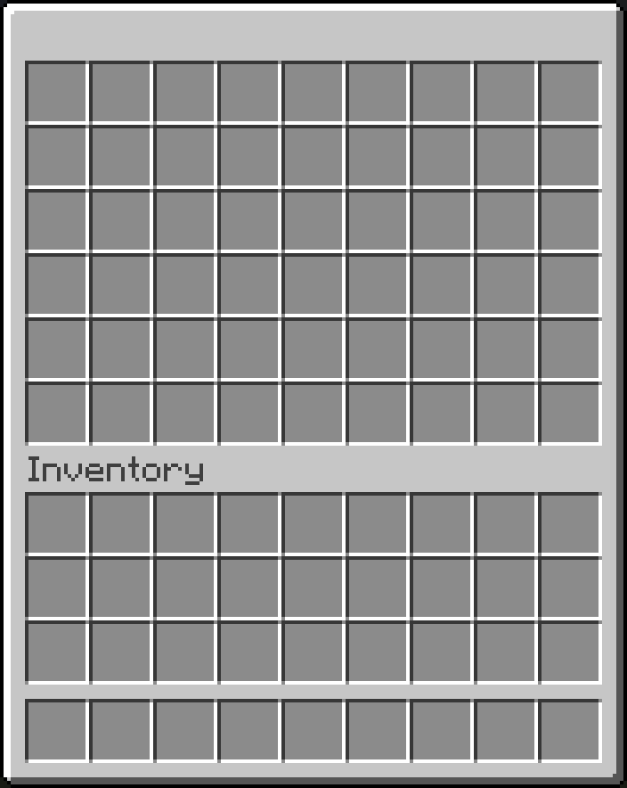 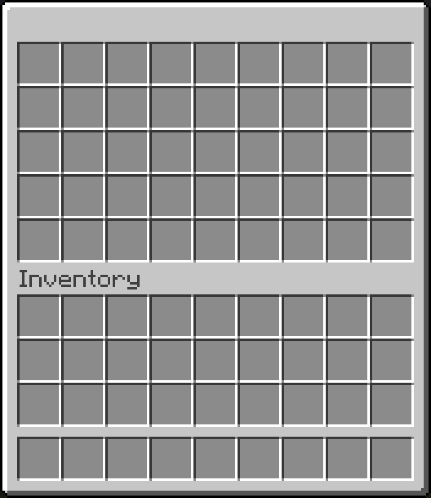 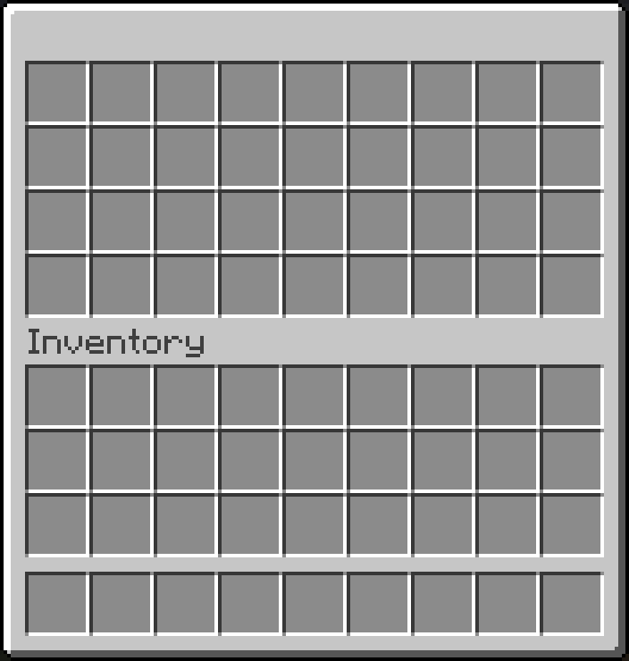 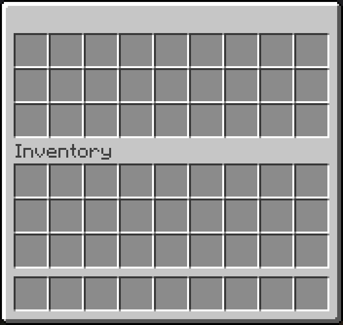 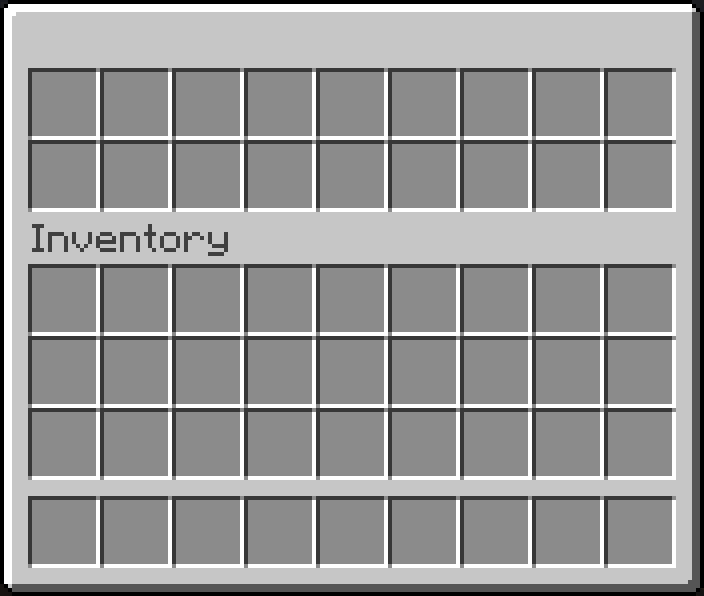 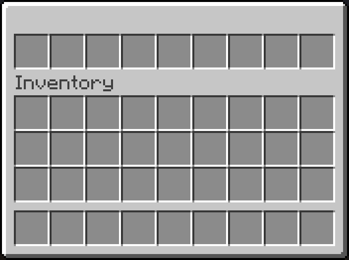 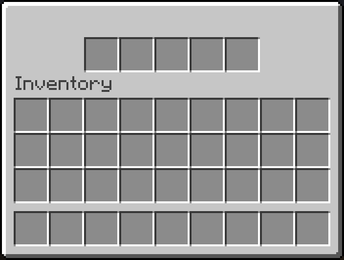 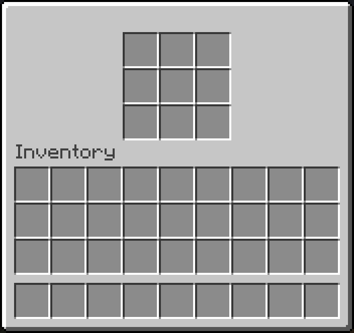
The following example creates a window with an upper gui of dimensions 9x6:
Window.builder()
.setTitle("Example Window")
.setUpperGui(Gui.builder()
.setStructure(
"# # # # # # # # #",
"# x x x x x x x #",
"# x x x x x x x #",
"# x x x x x x x #",
"# x x x x x x x #",
"# # # # # # # # #"
)
.addIngredient('#', Item.simple(ItemBuilder(Material.BLACK_STAINED_GLASS_PANE).hideTooltip(true)))
)
.open(player)
Window.builder()
.setTitle("Example Window")
.setUpperGui(Gui.builder()
.setStructure(
"# # # # # # # # #",
"# x x x x x x x #",
"# x x x x x x x #",
"# x x x x x x x #",
"# x x x x x x x #",
"# # # # # # # # #"
)
.addIngredient('#', Item.simple(new ItemBuilder(Material.BLACK_STAINED_GLASS_PANE).hideTooltip(true)))
)
.open(player);
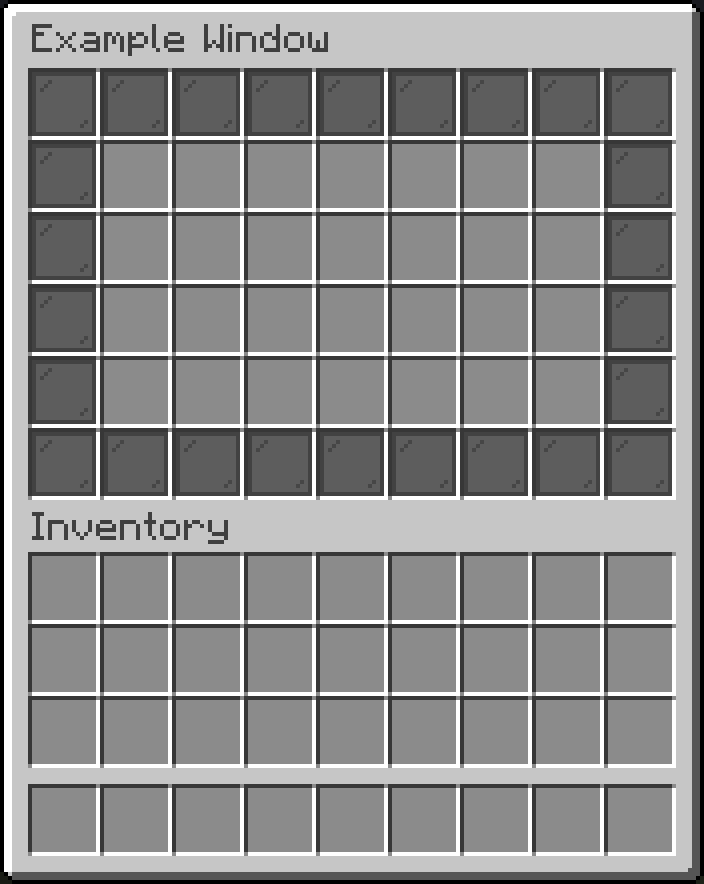
Every window type also allows you to set a lowerGui, which is the player's inventory. For the normal window, you can also create a mergedBuilder(), which accepts a singular gui that is then used for both of what were previously known as the upper and lower guis:
Window.mergedBuilder()
.setTitle("Example Window")
.setGui(Gui.builder()
.setStructure(
"# # # # # # # # #",
"# x x x x x x x #",
"# x x x x x x x #",
"# x x x x x x x #",
"# x x x x x x x #",
"# x x x x x x x #",
"# x x x x x x x #",
"# x x x x x x x #",
"# x x x x x x x #",
"# # # # # # # # #"
)
.addIngredient('#', Item.simple(ItemBuilder(Material.BLACK_STAINED_GLASS_PANE).hideTooltip(true)))
)
.open(player)
Window.mergedBuilder()
.setTitle("Example Window")
.setGui(Gui.builder()
.setStructure(
"# # # # # # # # #",
"# x x x x x x x #",
"# x x x x x x x #",
"# x x x x x x x #",
"# x x x x x x x #",
"# x x x x x x x #",
"# x x x x x x x #",
"# x x x x x x x #",
"# x x x x x x x #",
"# # # # # # # # #"
)
.addIngredient('#', Item.simple(new ItemBuilder(Material.BLACK_STAINED_GLASS_PANE).hideTooltip(true)))
)
.open(player);
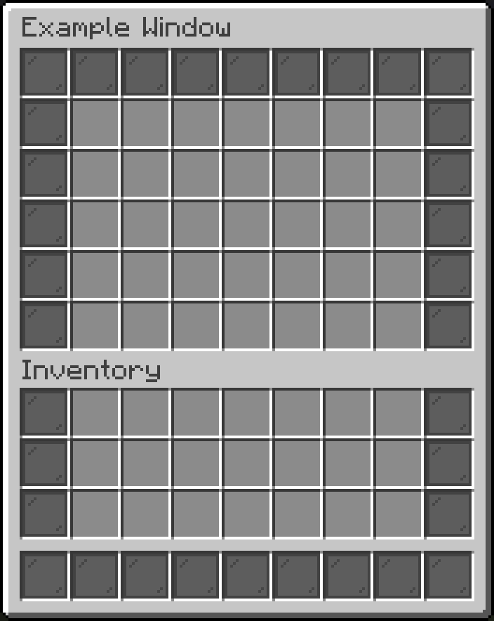
Anvil Window
The anvil window can be created using AnvilWindow.builder(). It consists of two guis: the 3x1 upper gui and the 9x4 lower gui. Additionally, the anvil window has a text input field, for which you can register handlers via addRenameHandler.
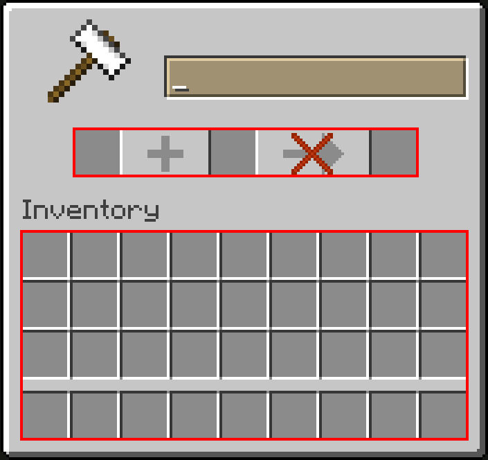
Example: Anvil-based search window
fun getItems(search: String): List<Item> = Material.entries
.filter { !it.isLegacy && it.isItem }
.filter { it.name.contains(search, true) }
.map { Item.simple(ItemBuilder(it)) }
val gui: PagedGui<Item> = PagedGui.itemsBuilder()
.setStructure(
"x x x x x x x x x",
"x x x x x x x x x",
"x x x x x x x x x",
"x x x x x x x x x"
)
.addIngredient('x', Markers.CONTENT_LIST_SLOT_HORIZONTAL)
.setContent(getItems(""))
.build()
AnvilWindow.builder()
.addRenameHandler { search -> gui.setContent(getItems(search)) }
.setLowerGui(gui)
.open(player)
Experimental, see Declarative Menus
anvilWindow(player) {
lowerGui by pagedItemsGui(
"x x x x x x x x x",
"x x x x x x x x x",
"x x x x x x x x x",
"x x x x x x x x x"
) {
'x' by Markers.CONTENT_LIST_SLOT_HORIZONTAL
content by this@anvilWindow.text.map { search ->
Material.entries
.filter { !it.isLegacy && it.isItem }
.filter { it.name.contains(search, true) }
.map { Item.simple(ItemBuilder(it)) }
}
}
}.open()
public static List<Item> getItems(String search) {
return Arrays.stream(Material.values())
.filter(m -> !m.isLegacy() && m.isItem())
.filter(m -> m.name().toLowerCase().contains(search.toLowerCase()))
.map(m -> Item.simple(new ItemBuilder(m)))
.toList();
}
PagedGui<Item> gui = PagedGui.itemsBuilder()
.setStructure(
"x x x x x x x x x",
"x x x x x x x x x",
"x x x x x x x x x",
"x x x x x x x x x"
)
.addIngredient('x', Markers.CONTENT_LIST_SLOT_HORIZONTAL)
.setContent(getItems(""))
.build();
AnvilWindow.builder()
.addRenameHandler(search -> gui.setContent(getItems(search)))
.setLowerGui(gui)
.open(player);

Brewing Window
The brewing window can be created using BrewingWindow.builder(). It consists of a 1x1 input gui, a 1x1 fuel gui, a 3x1 result gui and a 9x4 lower gui. Additionally, you can control the brew- and fuel progress bars.
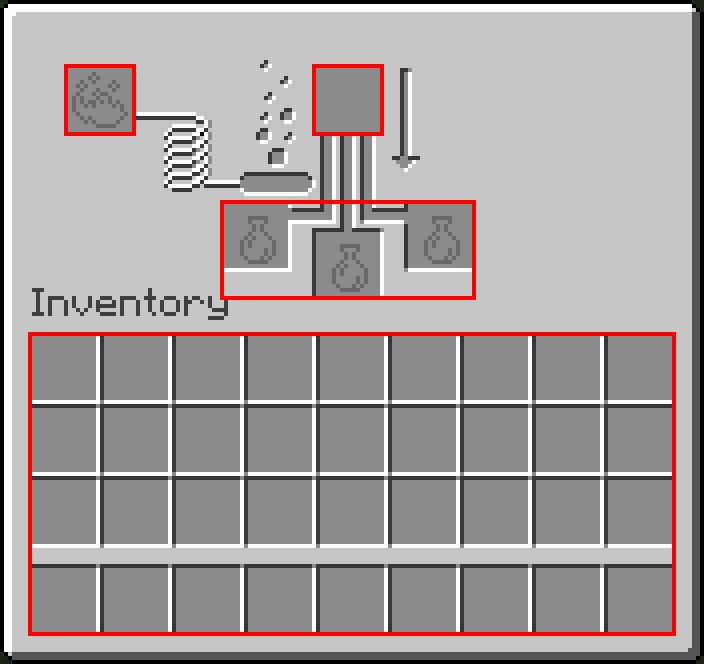
Cartography Window
The cartography window can be created using CartographyWindow.builder(). It consists of a 1x2 input gui, a 1x1 result gui and a 9x4 lower gui. The cartography window allows you to render arbitrary 128x128px images onto the map, as well as place marker icons and switch between the different map view types (duplicate, expand, lock).
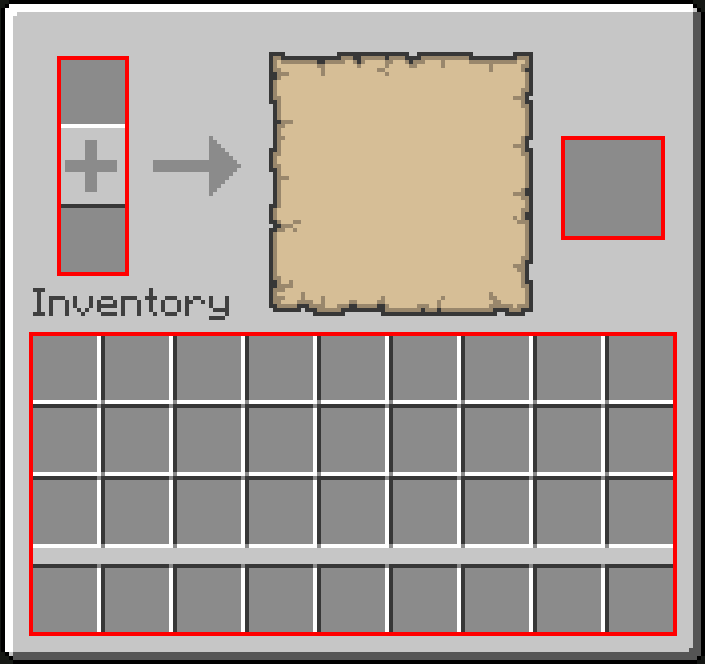
Example: Drawing in the cartography window
The following example takes advantage of the fact that bundles select slot -1 when the mouse cursor leaves them.
lateinit var window: CartographyWindow
val img = BufferedImage(128, 128, BufferedImage.TYPE_INT_RGB)
val lowerGui = Gui.empty(9, 4)
for (x in 0..<9) {
for (y in 0..<4) {
lowerGui[x, y] = Item.builder()
.setItemProvider {
ItemBuilder(Material.BUNDLE)
.set(DataComponentTypes.ITEM_MODEL, Key.key("minecraft", "black_stained_glass_pane"))
.hideTooltip(true)
}
.addBundleSelectHandler { _, _, _ ->
val graphics = img.createGraphics()
graphics.color = Color.WHITE
graphics.fillRect(
(x / 9.0 * 128).toInt(),
(y / 4.0 * 128).toInt(),
ceil(1.0 / 9.0 * 128).toInt(),
ceil(1.0 / 4.0 * 128).toInt()
)
graphics.dispose()
window.applyPatch(0, 0, img)
}
.build()
}
}
val resetItem = Item.builder()
.setItemProvider(ItemBuilder(Material.BARRIER).setName("<red>Clear"))
.addClickHandler { _, _ ->
val graphics = img.createGraphics()
graphics.color = Color.BLACK
graphics.fillRect(0, 0, img.width, img.height)
graphics.dispose()
window.applyPatch(0, 0, img)
}.build()
window = CartographyWindow.builder()
.setViewer(player)
.setResultGui(Gui.single(resetItem))
.setLowerGui(lowerGui)
.build()
window.open()
AtomicReference<CartographyWindow> window = new AtomicReference<>();
var img = new BufferedImage(128, 128, BufferedImage.TYPE_INT_RGB);
var lowerGui = Gui.empty(9, 4);
for (int x = 0; x < 9; x++) {
for (int y = 0; y < 4; y++) {
final int finalX = x;
final int finalY = y;
Item item = Item.builder()
.setItemProvider(p ->
new ItemBuilder(Material.BUNDLE)
.set(DataComponentTypes.ITEM_MODEL, Key.key("minecraft", "black_stained_glass_pane"))
.hideTooltip(true)
)
.addBundleSelectHandler(selectedSlot -> {
var graphics = img.createGraphics();
graphics.setColor(Color.WHITE);
graphics.fillRect(
(int) (finalX / 9.0 * 128),
(int) (finalY / 4.0 * 128),
(int) Math.ceil(1.0 / 9.0 * 128),
(int) Math.ceil(1.0 / 4.0 * 128)
);
graphics.dispose();
window.get().applyPatch(0, 0, img);
})
.build();
lowerGui.setItem(x, y, item);
}
}
var resetItem = Item.builder()
.setItemProvider(new ItemBuilder(Material.BARRIER).setName("<red>Clear"))
.addClickHandler(click -> {
var graphics = img.createGraphics();
graphics.setColor(Color.BLACK);
graphics.fillRect(0, 0, img.getWidth(), img.getHeight());
graphics.dispose();
window.get().applyPatch(0, 0, img);
})
.build();
window.set(CartographyWindow.builder()
.setViewer(player)
.setResultGui(Gui.single(resetItem))
.setLowerGui(lowerGui)
.build());
window.get().open();

Crafter Window
The crafter window can be created using CrafterWindow.builder(). It consists of a 3x3 crafting gui, a 1x1 result gui and a 9x4 lower gui. The disabled state of the crafting slots can be both server-controlled and used as player input by registering a slot toggle handler via addSlotToggleHandler.
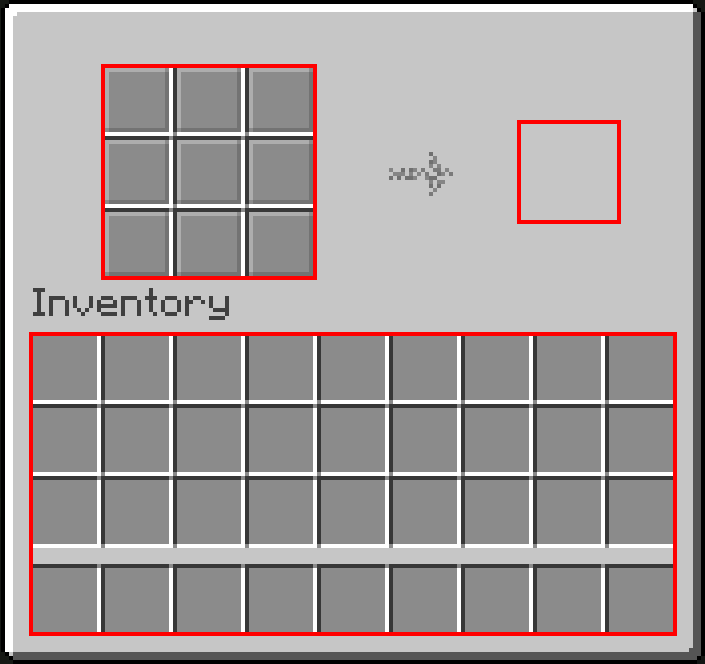
Crafting Window
The crafting window can be created using CraftingWindow.builder(). It consists of a 3x3 crafting gui, a 1x1 result gui and a 9x4 lower gui. Clicks in the recipe book can be handled via addRecipeClickHandler and ghost recipes can be shown via sendGhostRecipe.
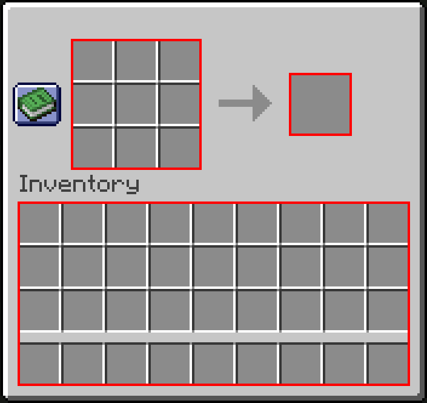
Example: Crafting window that always suggests a diamond hoe
The following example registers a recipe click handler that ignores the clicked recipe and always suggests a diamond hoe instead.

Furnace Window
The furnace window can be created using FurnaceWindow.builder(). It consists of a 1x2 input gui, a 1x1 result gui and a 9x4 lower gui. Like the crafting window, you can handle recipe clicks via addRecipeClickHandler and ghost recipes can be shown via sendGhostRecipe. Additionally, you can control the cook and burn progress.
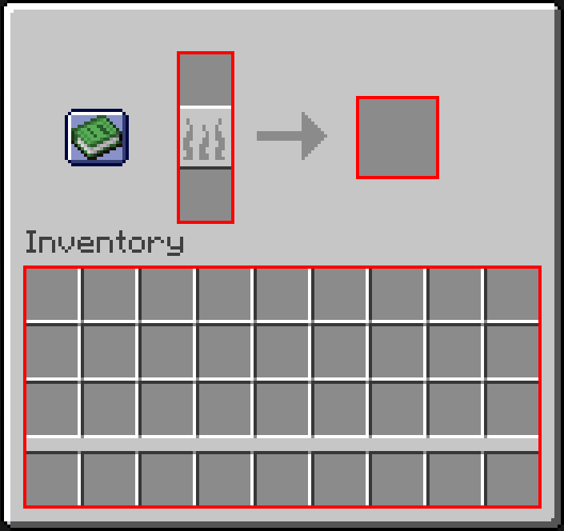
Grindstone Window
The grindstone window can be created using GrindstoneWindow.builder(). It consists of a 1x2 input gui, a 1x1 result gui and a 9x4 lower gui.
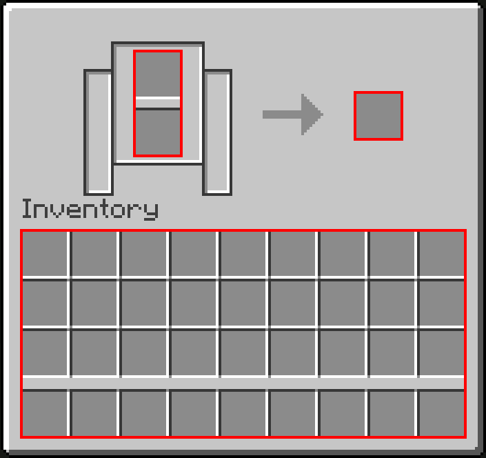
Merchant Window
The merchant window can be created using MerchantWindow.builder(). It consists of a 3x1 upper gui and a 9x4 lower gui. Additionally, you can set a list of trades that will show up as a scrollable list of buttons on the left side. A trade consists of three items and some additional metadata. When a trade is clicked, the click handlers of all three items are fired.
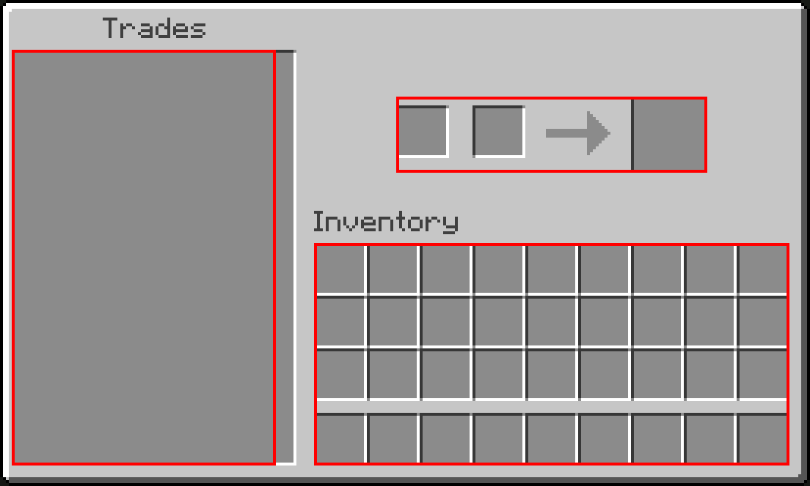
Example: Using trades as tab buttons
In the following example, the trade buttons are used to switch the tabs of a TabGui:
val woolItems: List<ItemStack> = Tag.WOOL.values.map(ItemStack::of)
val tabGui: TabGui = TabGui.builder()
.setStructure(
"x x x x x x x x x",
"x x x x x x x x x",
"x x x x x x x x x",
"x x x x x x x x x"
)
.addIngredient('x', Markers.CONTENT_LIST_SLOT_HORIZONTAL)
.setTabs(woolItems.map { Gui.of(9, 4, Item.simple(it)) })
.build()
val trades: List<MerchantWindow.Trade> = woolItems.mapIndexed { i, woolItem ->
val tabItem = Item.builder()
.setItemProvider(woolItem)
.addClickHandler { tabGui.tab = i }
.build()
MerchantWindow.Trade.builder()
.setFirstInput(tabItem)
.build()
}
MerchantWindow.builder()
.setLowerGui(tabGui)
.setTrades(trades)
.open(player)
Experimental, see Declarative Menus
merchantWindow(player) {
val woolItems = Tag.WOOL.values.map(ItemStack::of)
val tab = mutableProvider(0)
lowerGui by tabGui(
"x x x x x x x x x",
"x x x x x x x x x",
"x x x x x x x x x",
"x x x x x x x x x"
) {
'x' by Markers.CONTENT_LIST_SLOT_HORIZONTAL
tabs by woolItems.map { Gui.of(9, 4, Item.simple(it)) }
this.tab by tab
}
trades by woolItems.mapIndexed { i, wool ->
trade {
firstInput by item {
itemProvider by ItemBuilder(wool)
onClick { tab.set(i) }
}
}
}
}.open()
List<ItemStack> woolItems = Tag.WOOL.getValues().stream().map(ItemStack::of).toList();
TabGui tabGui = TabGui.builder()
.setStructure(
"x x x x x x x x x",
"x x x x x x x x x",
"x x x x x x x x x",
"x x x x x x x x x"
)
.addIngredient('x', Markers.CONTENT_LIST_SLOT_HORIZONTAL)
.setTabs(woolItems.stream().map(it -> Gui.of(9, 4, Item.simple(it))).toList())
.build();
List<MerchantWindow.Trade> trades = IntStream.range(0, woolItems.size())
.mapToObj(i -> {
Item tabItem = Item.builder()
.setItemProvider(woolItems.get(i))
.addClickHandler(click -> tabGui.setTab(i))
.build();
return MerchantWindow.Trade.builder()
.setFirstInput(tabItem)
.build();
})
.toList();
MerchantWindow.builder()
.setLowerGui(tabGui)
.setTrades(trades)
.open(player);

Smithing Window
The smithing window can be created using SmithingWindow.builder(). It consists of a 4x1 upper gui and a 9x4 lower gui. The item in the rightmost slot is rendered onto the armor stand (either it's equipment or hand item).
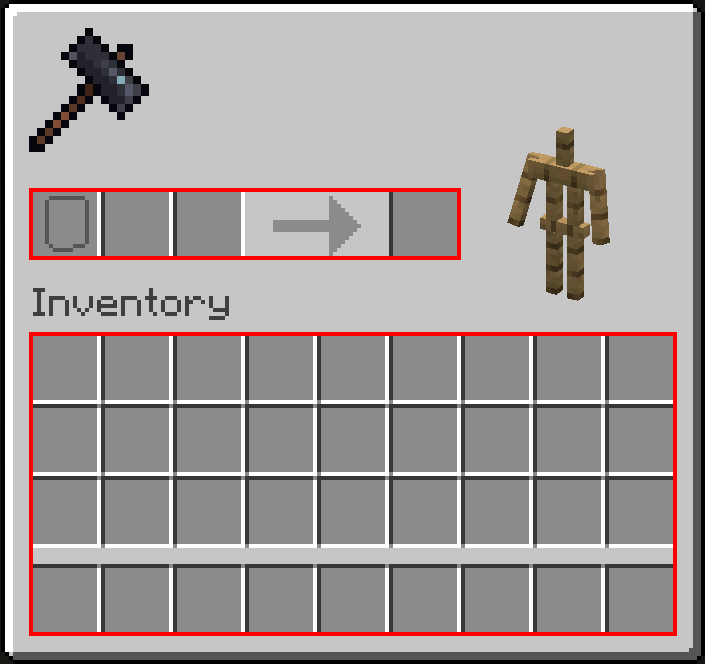
Stonecutter Window
The stonecutter window can be created using StonecutterWindow.builder(). It consists of a 2x1 upper gui, a 4xN buttons gui, where N can be any number, and a 9x4 lower gui. You can use the scroll bar to scroll through the buttons. A button can be selected and deselected by both the server and the player. You can register a selection handler via addSelectedSlotChangeHandler.
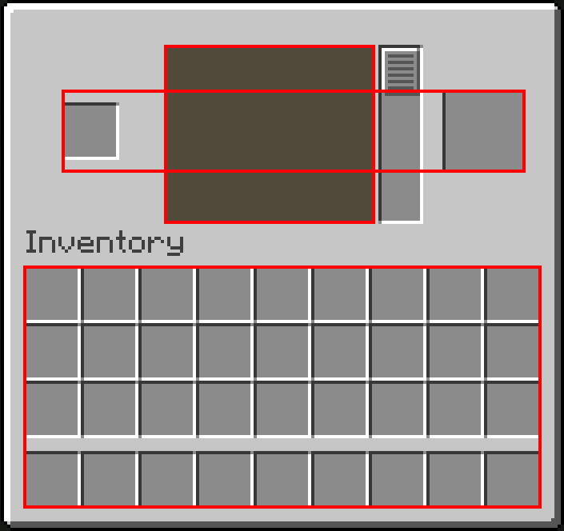
Example: Using the buttons as an inventory
The following example embeds a VirtualInventory into the buttons gui. Note that updating the buttons resets the scroll bar to the top, so this is not a practical use case.
StonecutterWindow.builder()
.setButtonsGui(Gui.of(4, 100, VirtualInventory(400)))
.addModifier { w -> w.addSelectedSlotChangeHandler { _, to -> if (to != -1) w.selectedSlot = -1 } } // (1)!
.open(player)
- This immediately unselects selected buttons.
Experimental, see Declarative Menus
stonecutterWindow(player) {
buttonsGui by VirtualInventory(400)
selectedSlot by mutableProvider(-1).apply { subscribe { to -> if (to != -1) set(-1) } } // (1)!
}.open()
- This immediately unselects selected buttons.

Using the player inventory
As mentioned before, the player inventory is always part of the window and thereby always handled by InvUI, even if you don't set a lower gui. InvUI's windows are also packet-based, which has the following benefits:
- Window items inside the player inventory cannot be accidentally saved to the world and end up in the actual player's inventory.
- UI items in the player inventory cannot trigger advancements.
- The player can still pick up or be given items while a window is open, without them showing up in the lower gui. They will then just be there when the window is closed. (Unless the lower gui just references the player's inventory, in which case they will show up immediately.)
By default, the lower gui is populated by a referencing inventory that is configured like this:
Inventory inv = ReferencingInventory.fromPlayerStorageContents(viewer.getInventory());
inv.reverseIterationOrder(OperationCategory.ADD); // shift-clicking moves to bottom right instead of top left
inv.setGuiPriority(OperationCategory.ADD, Integer.MAX_VALUE); // shift-click always moves between upper and lower inv
inv.setGuiPriority(OperationCategory.COLLECT, Integer.MIN_VALUE); // double-click collects from lower inv last
However, you can put any 9x4 gui as the lower gui, which will then be used instead of the default one. For example, this can be used to implement a search preview when using an anvil window as text input.
Example: Using another player's inventory as the lower gui
The following example embeds another player's inventory into the lower gui instead of the player's own inventory:
val inv = ReferencingInventory.fromPlayerStorageContents(otherPlayer.inventory)
inv.reverseIterationOrder(OperationCategory.ADD) // shift-clicking moves to bottom right instead of top left
inv.setGuiPriority(OperationCategory.ADD, Int.MAX_VALUE) // shift-click always moves between upper and lower inv
inv.setGuiPriority(OperationCategory.COLLECT, Int.MIN_VALUE) // double-click collects from lower inv last
Window.builder()
.setUpperGui(Gui.empty(5, 1))
.setLowerGui(Gui.of(9, 4, inv))
.open(player)
var inv = ReferencingInventory.fromPlayerStorageContents(otherPlayer.inventory);
inv.reverseIterationOrder(OperationCategory.ADD); // shift-clicking moves to bottom right instead of top left
inv.setGuiPriority(OperationCategory.ADD, Integer.MAX_VALUE); // shift-click always moves between upper and lower inv
inv.setGuiPriority(OperationCategory.COLLECT, Integer.MIN_VALUE); // double-click collects from lower inv last
Window.builder()
.setUpperGui(Gui.empty(5, 1))
.setLowerGui(Gui.of(9, 4, inv))
.open(player);

Fallback Window
When designing menus that span multiple windows, it may often make sense to have some way of going back to a previous window. Apart from just adding an item that opens said window, you can also set a window that should be opened when the player closes the window by pressing E or ESC. This is called the fallback window.